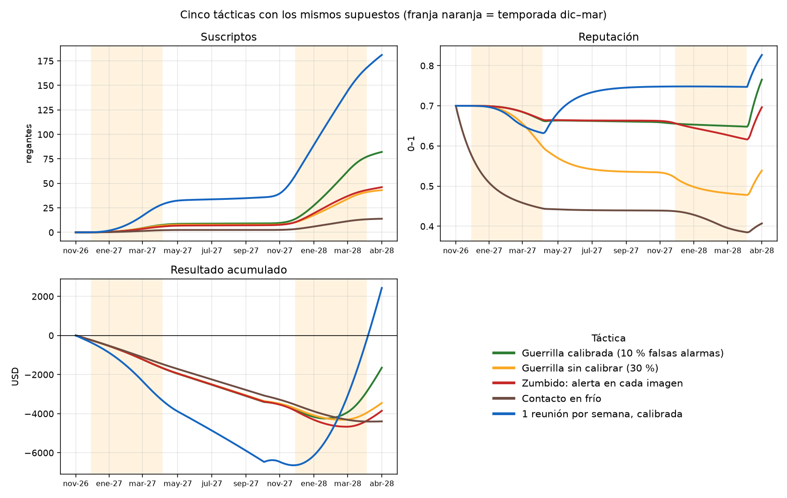
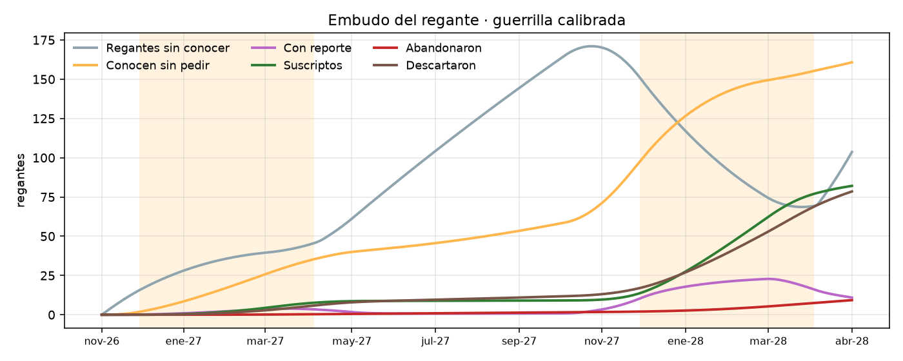
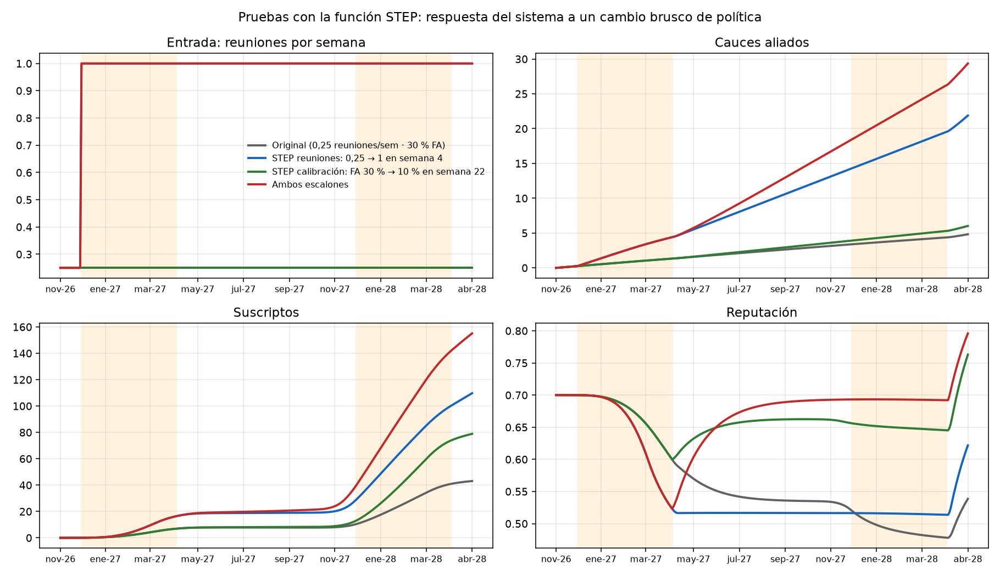
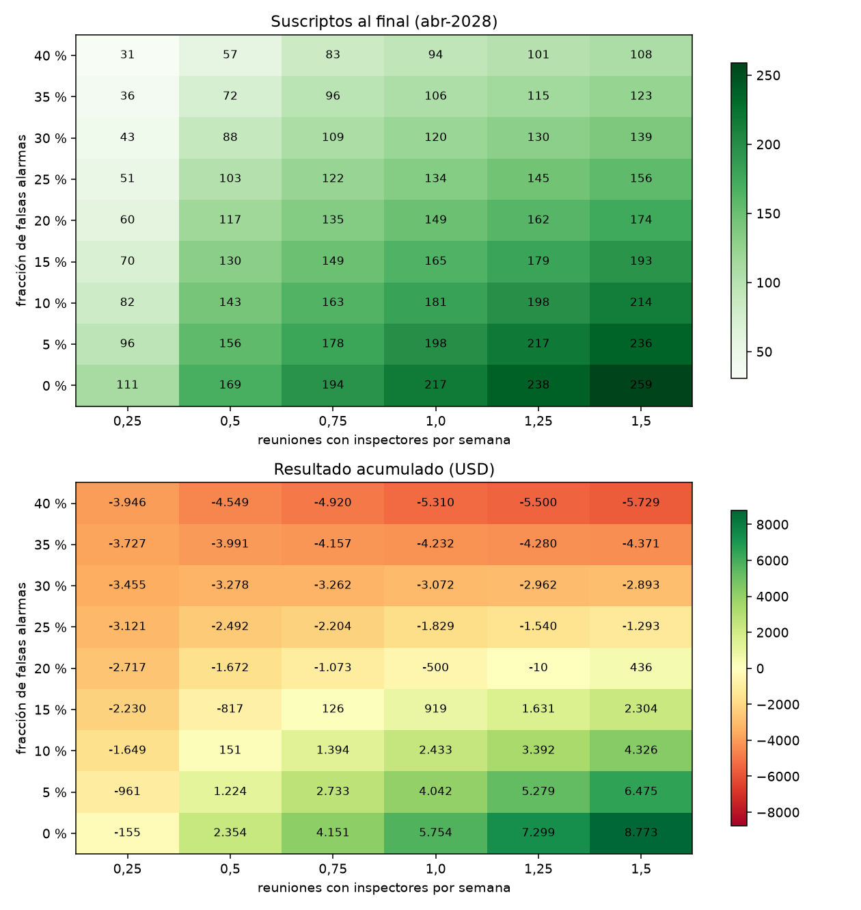

Modelo Vensim de stocks y flujos del mercado, replicado en Python para escenarios y sensibilidad
| Grupo | Grupo λ (Grupo 2) · Ingeniería Industrial · UNCuyo · noviembre de 2026 |
| Integrantes | Juan Martín Zingaretti Martinelli (14634) · Nicolás Sarmiento Lugones (14747) · Raimundo Glasner (14745) · Joaquina Notti (14613) · Manuel Roby (14914) · Juan Cruz Solchaga (14813) · Juan Mateo Hidalgo (14826) |
| Archivos | marketing_guerrilla.mdl · marketing_guerrilla_STEP.mdl · simulacion/*.py |
SatellAgro no se vende con publicidad: llega a los regantes cauce por cauce, a través del inspector de cada Inspección de Cauce, con un reporte gratis que "pica" y deja "roncha" (marketing de guerrilla). Queríamos saber qué táctica comercial hace crecer la base de suscriptos sin destruir la reputación del servicio, y cuál es el cuello de botella. Es un problema típico de dinámica de sistemas: hay acumulaciones (stocks), demoras y realimentaciones que hacen que la intuición falle.
Horizonte: 78 semanas, del 1/11/2026 a fines de abril de 2028 (dos temporadas de vid). Paso de integración: 0,25 semanas (Euler).
| Bucle | Tipo | Mecanismo |
|---|---|---|
| Boca a boca | Refuerzo (+) | Más suscriptos → más vecinos convencidos → más regantes que conocen el servicio. Los que abandonaron pesan 1,5 veces en contra. |
| Casos de éxito | Refuerzo (+) | Más suscriptos → más casos al cierre → más chance de acuerdo con nuevos inspectores y mejor reputación. |
| Falsas alarmas | Balance (−) | Más suscriptos expuestos a alertas falsas → baja la reputación → bajan los pedidos y la "roncha". |
| Zumbido | Balance (−) | Más alertas por semana que la tolerancia → más abandono. |
| Agotamiento del mercado | Balance (−) | Los regantes sin conocer se agotan dentro de cada cauce aliado. |
La ventana estacional (tabla de búsqueda) multiplica casi todas las tasas: vale 1 entre diciembre y febrero (calor y envero, el "atardecer" del mosquito) y 0,1 en invierno.
40 cauces vitícolas en la zona; 120 regantes por cauce, el 60 % con vid; precio de USD 150 por temporada, con la primera temporada gratis; capacidad de 15 reportes por semana; USD 15 por reporte explicado, USD 40 por reunión y USD 50 de costo fijo semanal. Son supuestos a verificar con el DGI y el padrón de un cauce real. El modelo sirve para comparar tácticas entre sí, no para pronosticar ventas.
Para poder correr muchos escenarios sin depender de la licencia de Vensim, reescribimos el modelo en Python ecuación por ecuación, con el mismo integrador de Euler, el mismo paso y las mismas funciones (PULSE, WITH LOOKUP, XIDZ). Después comparamos con los resultados de Vensim presentados por el equipo:
| Escenario | T1: cauces / altas | T2: suscriptos | Retención | Reputación | Resultado USD |
|---|---|---|---|---|---|
| Guerrilla calibrada (10 % FA) | 1,4 / 8 | 82 | 90 % | 0,77 | −1.649 |
| Guerrilla sin calibrar (30 % FA) | 1,3 / 7 | 43 | 84 % | 0,54 | −3.455 |
| Zumbido: alerta en cada imagen | 1,4 / 8 | 46 | 58 % | 0,70 | −3.855 |
| Contacto en frío | 1,0 / 2 | 14 | 88 % | 0,41 | −4.396 |
| 1 reunión por semana, calibrada | 5,3 / 30 | 181 | 87 % | 0,83 | +2.433 |
La réplica coincide exactamente con Vensim en los 30 valores de la tabla. T1 se mide al cierre de la primera temporada (semana 22, fin de marzo de 2027) y el resto en la semana 78. Con la réplica validada, los análisis siguientes son confiables.


Para estudiar la respuesta del sistema a un cambio brusco de política creamos marketing_guerrilla_STEP.mdl. Agrega dos escalones con la función STEP(altura, semana) de Vensim, que se pueden apagar poniendo su altura en 0:
Reuniones = 0,25 + STEP(0,75; 4). En la semana 4 (principios de diciembre de 2026) el equipo pasa de una reunión cada cuatro semanas a una por semana.Falsas alarmas = 0,30 − STEP(0,20; 22). Al cierre de la primera temporada, la calibración en campo baja las falsas alarmas del 30 % al 10 %.
| Prueba | T1: cauces / altas | T2: suscriptos | Reputación | Resultado USD |
|---|---|---|---|---|
| Original (0,25 reuniones/sem · 30 % FA) | 1,3 / 7 | 43 | 0,54 | −3.455 |
| STEP de reuniones en semana 4 | 4,4 / 17 | 110 | 0,62 | −3.912 |
| STEP de calibración en semana 22 | 1,3 / 7 | 79 | 0,76 | −1.826 |
| Ambos escalones | 4,4 / 17 | 155 | 0,80 | −258 |

| Fracción de falsas alarmas | 0–10 % | 15 % | 20 % | 25 % o más |
|---|---|---|---|---|
| Reuniones por semana mínimas para no perder plata en dos temporadas | 0,5 | 0,75 | 1,5 | Ninguna en el rango probado |
Con 25 % o más de falsas alarmas no hay esfuerzo de campo que salve el negocio en dos temporadas. La calidad de la señal es una condición necesaria, no un detalle técnico.
| Precio por temporada (USD) | 75 | 100 | 150 | 200 | 250 |
|---|---|---|---|---|---|
| Resultado a abr-2028 (guerrilla calibrada, 0,25 reuniones/sem) | −5.109 | −3.955 | −1.649 | +658 | +2.965 |
Con el esfuerzo mínimo, el equilibrio en dos temporadas exige un precio cercano a USD 185 (interpolando entre 150 y 200). Duplicar o cuadruplicar las reuniones es más efectivo que subir el precio, porque además hace crecer la base de suscriptos.
marketing_guerrilla.mdl (modelo base) o marketing_guerrilla_STEP.mdl (con escalones) y simular. Para volver al modelo base desde la variante STEP, poner en 0 "Aumento de reuniones" y "Mejora por calibración".python simulacion/modelo_guerrilla.py imprime los cinco escenarios; python simulacion/analisis_m5.py figuras regenera todos los gráficos y resultados_m5.json.